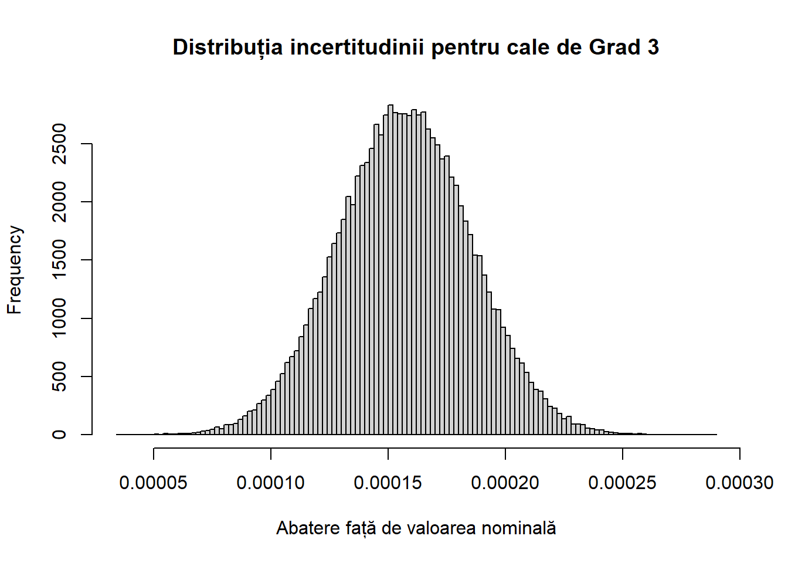

s1 <- seq(.1001, .1009, .0001)
s2 <- seq(.101, .1491, .001)
s3 <- seq(.050, .9501, .050)
s4 <- seq(1, 4)
s <- c(s1,s2,s3,s4)Cod pentru lucrare de licență
Arta preciziei: o explorare matematică a unui set de cale plan paralele
Abstract
O incursiune matematică în fascinanta lume a preciziei și metrologiei. Pornind de la aspectele combinatorice ale unui set de cale plan paralele, această lucrare studiază intervalul de măsuri realizabile, numărul lor și criteriile obținerii unei combinații optime. Subliniază importanța selectării clasei de precizie adecvate pentru a asigura acuratețea optimă a măsurătorilor și aduce în discuție echilibrul complicat de planeitate, paralelism și exactitate pe care o cale plan paralela trebuie să-l îndeplinească. Pe lângă eleganța și simplitatea matematică a acestor instrumente, lucrarea evidențiază rolul critic pe care acestea îl au (și l-au avut) în menținerea avansării tehnologiei.
Work in progress!
nums <- sort(c(.05, sum(s), sum(s)-.05, .05+s1, s1, sum(s)-s1, sum(s)-(.05+s1), seq(.1, .2, .001), seq(.2001, sum(s)-.2001, .0001), seq(sum(s)-.2, sum(s)-.1, .001)))data <- data.frame(
numar = nums
)
data$combinatii <- NA
data$nr_comb <- NA
data$ok <- NA#
# write.csv(data, "date_02.csv")# data$combinatii[1]<-0
# which(data$numar==.1000)gauge <- function(nr){
comb <- vector()
n1 <- round(nr*10000)%%10
if(n1!=0){
nr <- nr-s1[n1]
comb <- c(comb, s1[n1])
s1 <- s1[-n1]
}
n2 <- round(nr*1000)%%50
if(n2!=0){
nr <- nr-s2[round(n2)]
comb <- c(comb, s2[n2])
s2 <- s2[-n2]
}
n3 <- round((round(nr*100)%%100)/5)
if(n3!=0 && n3<20){
nr <- nr-s3[n3]
comb<-c(comb, s3[n3])
s3 <- s3[-n3]
}
if(nr>=10 | 10-nr<10^(-5)){
comb <- c(comb,s4)
nr <- nr-10
} else {
for (i in seq(1,4)){
if(nr>=s4[5-i] | s4[5-i]-nr<10^(-5)){
nr <- nr-s4[5-i]
comb <- c(comb, s4[5-i])
}
}
}
if(round(nr, digits=5)==0){
return(comb)
}
if(nr>=sum(s3) | sum(s3)-nr<10^(-5)){
comb <- c(comb,s3)
nr <- nr-sum(s3)
} else {
while(nr>10^(-5) && length(s3)!=0){
m3 <- max(which(s3<=nr+10^(-5)))
nr <- nr-s3[m3]
if(nr<s3[1] && nr>10^(-5)){
nr <- nr+s3[m3]
m3 <- m3-1
nr <- nr-s3[m3]
}
comb <- c(comb,s3[m3])
s3 <- s3[-m3]
}
}
# if(round(nr, digits=5)==0){
# return(comb)
# }
# # print(nr)
# if(nr<.4){
# k = round(.4-nr, digits=5)
# nr <- nr+k
# comb <- comb[-which(comb==k)]
# while(nr>10^(-5) && length(s2)!=0){
# m2 <- max(which(s2<=nr+10^(-5)))
# # print(m2)
# nr <- nr-s2[m2]
# # print(nr)
# if(any(abs(comb-nr)<10^(-5))){
# # print('d')
# nr <- nr+s2[m2]
# m2 <- m2-1
# nr <- nr-s2[m2]
# }
# if(nr<s2[1] && nr>10^(-5)){
# nr <- nr+s2[m2]
# m2 <- min(which(s2<=nr+10^(-5)))
# nr <- nr-s2[m2]
# }
# # print(nr)
# comb <- c(comb,s2[m2])
# s2 <- s2[-m2]
# }
# } else {
# while(nr>10^(-5) && length(s2)!=0){
# m2 <- max(which(s2<=nr+10^(-5)))
# # print(m2)
# nr <- nr-s2[m2]
# # print(nr)
# if(nr<s2[1] && nr>10^(-5)){
# nr <- nr+s2[m2]
# m2 <- min(which(s2<=nr+10^(-5)))
# nr <- nr-s2[m2]
# }
# # print(nr)
# comb <- c(comb,s2[m2])
# s2 <- s2[-m2]
# }
# }
# print(nr)
if(round(nr, digits=5)==0){
return(comb)
}
# for (i in seq(1,19)){
# if((nr>=s3[20-i] | s3[20-i]-nr<10^(-5)) && any(s3[20-i]==comb)==FALSE){
# nr <- nr-s3[20-i]
# comb <- c(comb, s3[20-i])
# }
# }
# for (i in seq(1,24)){
# if(round(nr, digits=2)>=.25 && (any(s2[i]==comb)==FALSE && any(s2[50-i]==comb)==FALSE)){
# nr <- nr-.25
# comb <- c(comb, s2[i], s2[50-i])
# } else if(nr>0 && nr<=.25){
# comb <- comb[!comb==round(.25-nr, digits=2)]
# nr <- .25
# }
# }
return(comb)
}# p <- sort(date2$numar)
# rownames(date2) <- NULL# p <- sort(date2$numar)
# rownames(date2) <- NULLdate <- read.csv("date_01.csv")
date$ok <- as.factor(date$ok)# date2 <- date[which(date$ok!=0),]# test <- data[1:20000,]
# for(i in seq(1, length(date3$numar))){
# g = gauge(date3[i,2])
# date3$combinatii[i] <- list(g)
# date3$nr_combinatii[i] <- length(g)
# date3[i, 4] <- round(date3[i, 2]-sum(g), digits=4)
# }# date2$ok <- as.factor(date2$ok)
# date3 <- date2[which(date2$ok!=0),]
# rownames(date3) <- NULL# data_str <- apply(data,2,as.character)
# write.csv(data_str, "date_01.csv")library(tidyverse)── Attaching core tidyverse packages ──────────────────────── tidyverse 2.0.0 ──
✔ dplyr 1.1.4 ✔ readr 2.1.5
✔ forcats 1.0.0 ✔ stringr 1.5.1
✔ ggplot2 3.5.1 ✔ tibble 3.2.1
✔ lubridate 1.9.3 ✔ tidyr 1.3.1
✔ purrr 1.0.2
── Conflicts ────────────────────────────────────────── tidyverse_conflicts() ──
✖ dplyr::filter() masks stats::filter()
✖ dplyr::lag() masks stats::lag()
ℹ Use the conflicted package (<http://conflicted.r-lib.org/>) to force all conflicts to become errorsggplot(date, aes(x = numar, y = nr_combinatii, col = ok)) +
geom_point(size=.1) +
labs(title = "Nr si cate cale e nevoie \n - colorare după precizie -",
x = "Nr",
y = "Nr cale")
date_t <- date
date_t$ok[as.numeric(as.character(date_t$ok))>10^(-5)] <- as.factor(1)
ggplot(date_t, aes(x = numar, y = nr_combinatii, col = ok)) +
geom_point(size=.1) +
labs(title = "Vizualizarea numărului necesar de cale pentru fiecare mărime \n - colorare după precizie -",
x = "Mărimea pe care vrem să o construim",
y = "Nr. de cale necesar") +
scale_x_continuous(breaks = round(seq(min(date_t$numar), max(date_t$numar), by = 2),10)) +
scale_y_continuous(breaks = round(seq(min(date_t$nr_combinatii), max(date_t$nr_combinatii), by = 5),1))
p <- rnorm(10^4, 0, 0.5)
for(i in seq(20)){
q <- rnorm(10^4, 0, 0.5)
p <- p+q
}
hist(p)
datc <- read.csv("data_complet!.csv")
datc$ok[datc$ok>0] <- 1
datc$ok[datc$ok<0] <- -1
datc$ok <- as.factor(datc$ok)
datc1 <- datc[which(datc$ok!=0),]ggplot(datc, aes(x = numar, y = nr_comb, col = ok)) +
geom_point(size=.1) +
labs(title = "Vizualizarea numărului necesar de cale pentru fiecare mărime \n - colorare după precizie -",
x = "Mărimea pe care vrem să o construim",
y = "Nr. de cale necesar") +
scale_x_continuous(breaks = round(seq(min(date_t$numar), max(date_t$numar), by = 2),10)) +
scale_y_continuous(breaks = round(seq(min(date_t$nr_comb), max(date_t$nr_comb), by = 5),1))Warning: Removed 1 row containing missing values or values outside the scale range
(`geom_point()`).options(scipen=999)hist(p)
g1 <- numeric(10^5)
g2 <- numeric(10^5)
g3 <- numeric(10^5)
comb <- c(0.128, 0.103, 0.129, 0.104, 1.0, 0.13, 0.105, 0.95, 0.131, 2.0, 0.106, 0.132, 0.9, 0.107, 3.0, 0.133, 0.85, 0.108, 0.134, 4.0, 0.8, 0.109, 0.135, 0.11, 0.75, 0.136, 0.111, 0.7, 0.137, 0.112, 0.138, 0.65, 0.113, 0.139, 0.6, 0.14, 0.55, 0.141, 0.5, 0.142, 0.45, 0.143, 0.144, 0.4, 0.119, 0.145, 0.35, 0.146, 0.3, 0.121, 0.147, 0.122, 0.25, 0.148, 0.123, 0.2, 0.149, 0.124, 0.15, 0.125, 0.1, 0.1001, 0.1002, 0.1003, 0.126, 0.1004, 0.1006, 0.1007, 0.1008, 0.1009, 0.101, 0.05, 0.127, 0.102)
comb1 <- c(0.1001, 0.144, 0.25, 4, 1)
g1 <- numeric(10^5)
for(i in seq(length(comb))){
if(comb[i]<1+10^(-5)){
g1 <- g1 + rnorm(10^5, 0, 10^(-6))
}
if(abs(round(comb[i]-2))<10^(-5)){
g1 <- g1 + rnorm(10^5, 0, 2*10^(-6))
}
if(abs(round(comb[i]-3))<10^(-5)){
g1 <- g1 + rnorm(10^5, 0, (2.5)*10^(-6))
}
if(abs(round(comb[i]-4))<10^(-5)){
g1 <- g1 + rnorm(10^5, 0, 3*10^(-6))
}
}
g2 <- numeric(10^5)
for(i in seq(length(comb))){
if(comb[i]<1+10^(-5)){
g2 <- g2 + rnorm(10^5, 0.000001, 1.5*10^(-6))
}
if(abs(round(comb[i]-2))<10^(-5)){
g2 <- g2 + rnorm(10^5, 0.000002, 3*10^(-6))
}
if(abs(round(comb[i]-3))<10^(-5)){
g2 <- g2 + rnorm(10^5, 0.0000025, (3.75)*10^(-6))
}
if(abs(round(comb[i]-4))<10^(-5)){
g2 <- g2 + rnorm(10^5, 0.000003, (4.5)*10^(-6))
}
}
g3 <- numeric(10^5)
for(i in seq(length(comb))){
if(comb[i]<1+10^(-5)){
g3 <- g3 + rnorm(10^5, 0.000002, 3*10^(-6))
}
if(abs(round(comb[i]-2))<10^(-5)){
g3 <- g3 + rnorm(10^5, 0.000004, 6*10^(-6))
}
if(abs(round(comb[i]-3))<10^(-5)){
g3 <- g3 + rnorm(10^5, 0.000005, (7.5)*10^(-6))
}
if(abs(round(comb[i]-4))<10^(-5)){
g3 <- g3 + rnorm(10^5, 0.000006, (9)*10^(-6))
}
}
cat("\n")hist(g1, xlab = "Abatere față de valoarea nominală", main="Distribuția incertitudinii pentru cale de Grad 1", breaks=100)sd_g1 = sd(g1)
cat("Media combinației folosind g1 este 0 iar deviația standard este ", round(sd_g1, digits=7),".\n")Media combinației folosind g1 este 0 iar deviația standard este 0.0000095 .cat("Combinația cu calele g1 oferă cu 95% încredere toleranța [",round(-2*sd_g1, digits=6), ", ", round(2*sd_g1, digits=6),"]\n")Combinația cu calele g1 oferă cu 95% încredere toleranța [ -0.000019 , 0.000019 ]cat("\n")hist(g2, xlab = "Abatere față de valoarea nominală", main="Distribuția incertitudinii pentru cale de Grad 2", breaks=100)sd_g2 = sd(g2)
mean_g2 = mean(g2)
cat("Media combinației folosind g2 este ",round(mean_g2, digits=7), " iar deviația standard este ", round(sd_g2, digits=7),".\n")Media combinației folosind g2 este 0.0000785 iar deviația standard este 0.0000142 .cat("Combinația cu calele g2 oferă cu 95% încredere toleranța [",round(mean_g2-2*sd_g2, digits=6), ", ", round(mean_g2+2*sd_g2, digits=6), "]\n")Combinația cu calele g2 oferă cu 95% încredere toleranța [ 0.00005 , 0.000107 ]cat("\n")hist(g3, xlab = "Abatere față de valoarea nominală", main="Distribuția incertitudinii pentru cale de Grad 3", breaks=100)
sd_g3 = sd(g3)
mean_g3 = mean(g3)
cat("Media combinației folosind g3 este ",round(mean_g3, digits=7), " iar deviația standard este ", round(sd_g3, digits=7),".\n")Media combinației folosind g3 este 0.0001571 iar deviația standard este 0.0000284 .cat("Combinația cu calele g3 oferă cu 95% încredere toleranța [",round(mean_g3-2*sd_g3, digits=6), ", ", round(mean_g3+2*sd_g3, digits=6), "]\n")Combinația cu calele g3 oferă cu 95% încredere toleranța [ 0.0001 , 0.000214 ]for(i in seq(length(comb1))){
if(comb1[i]<1){
p <- c(p, rnorm(10^5, 0, 1/2))
} else{
p <- c(p, rnorm(10^5, 0, comb1[i]/2))
}
}
hist(p, freq = TRUE, breaks=150)print(sd(p))[1] 1.041209